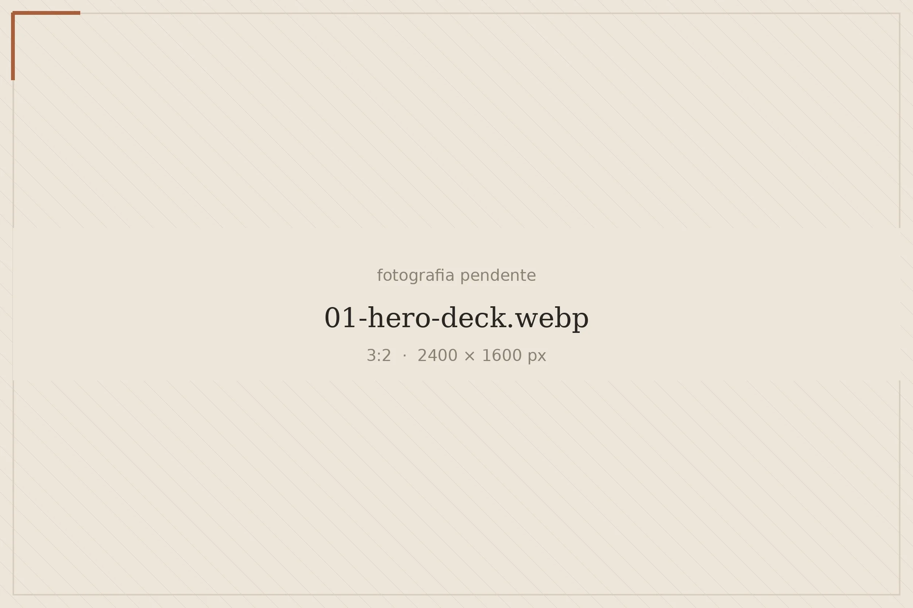
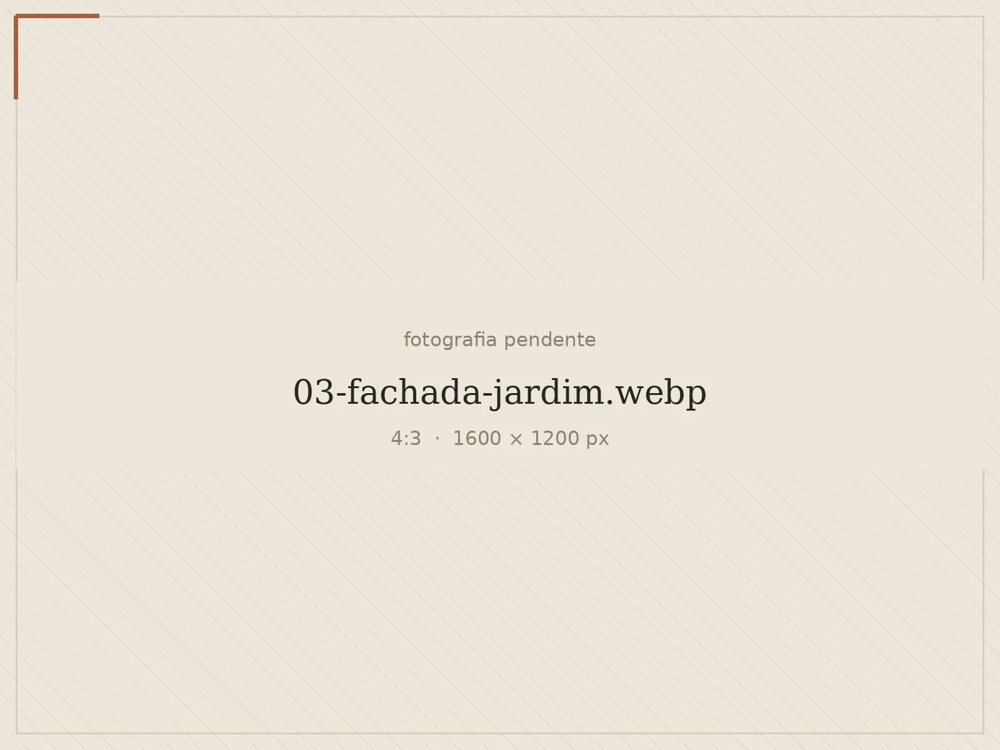
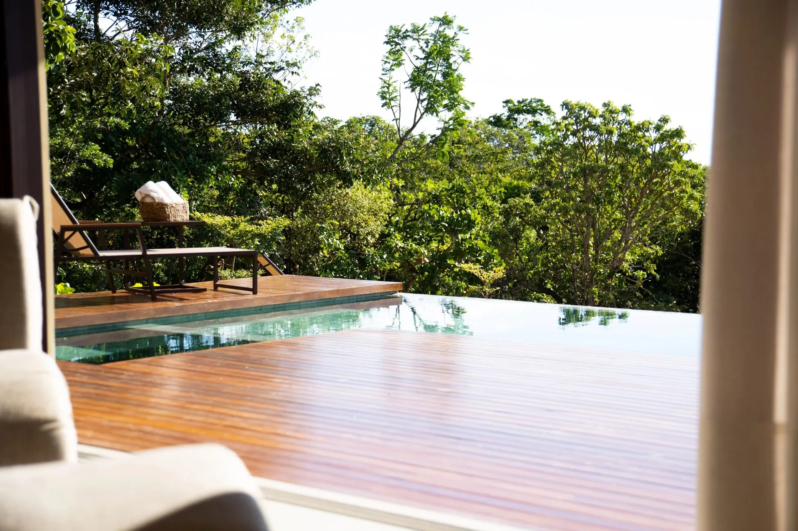
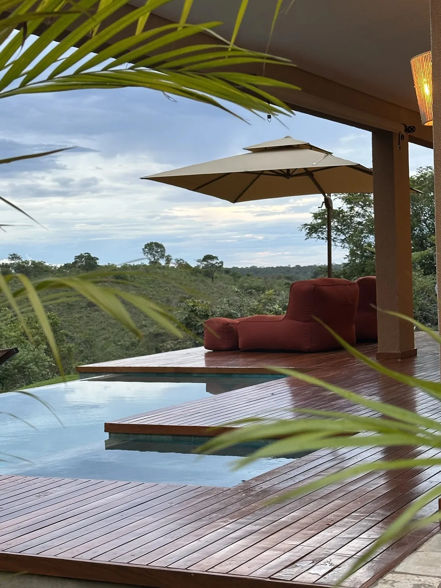
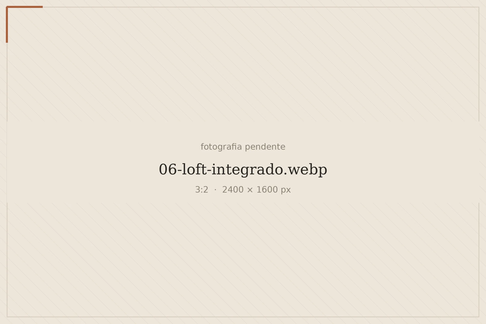
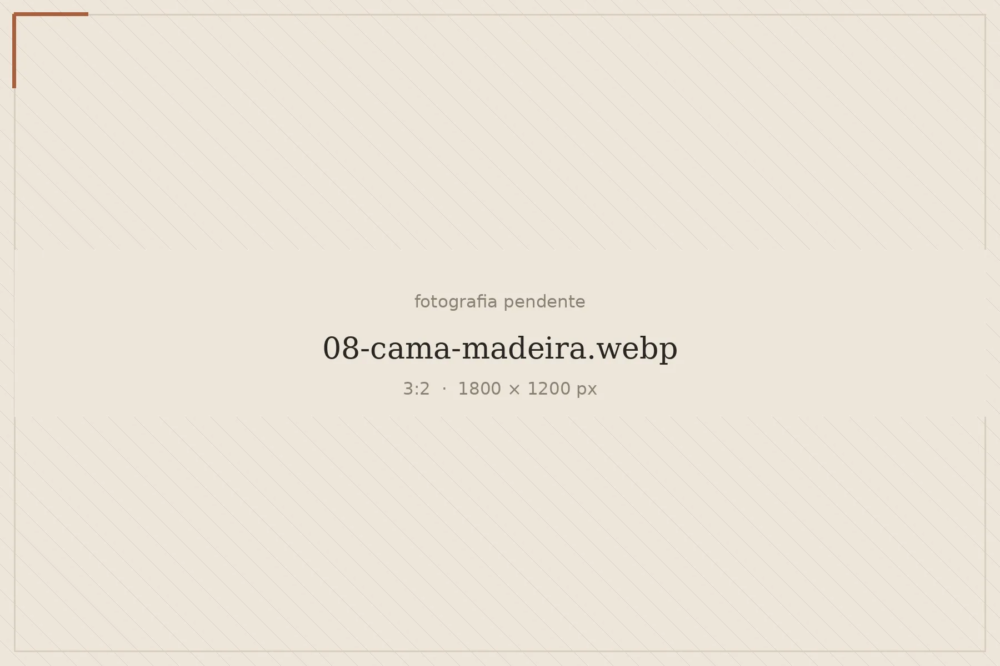
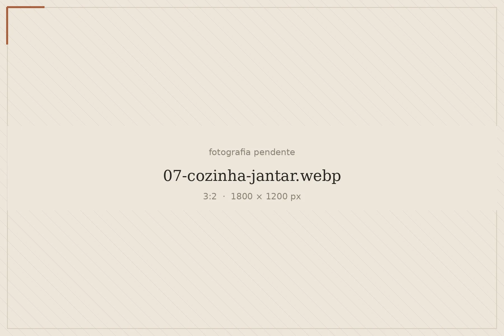
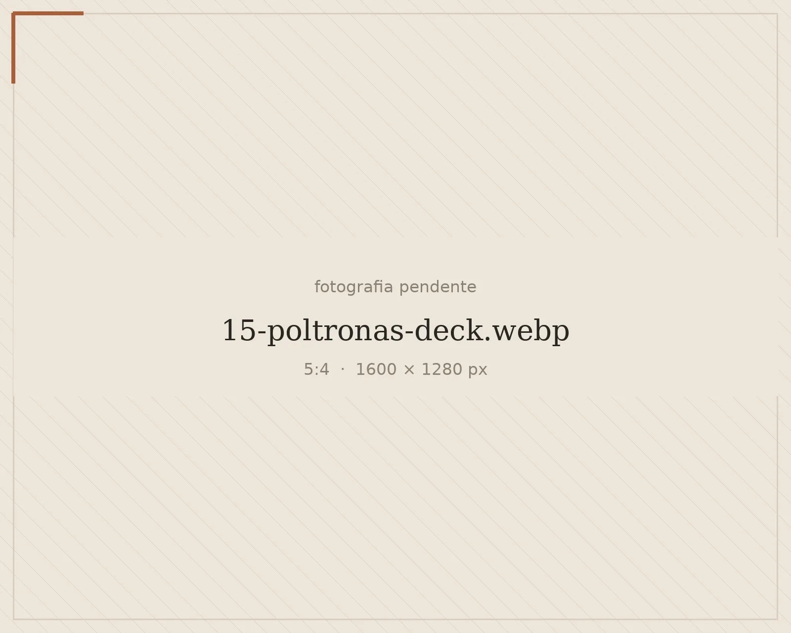
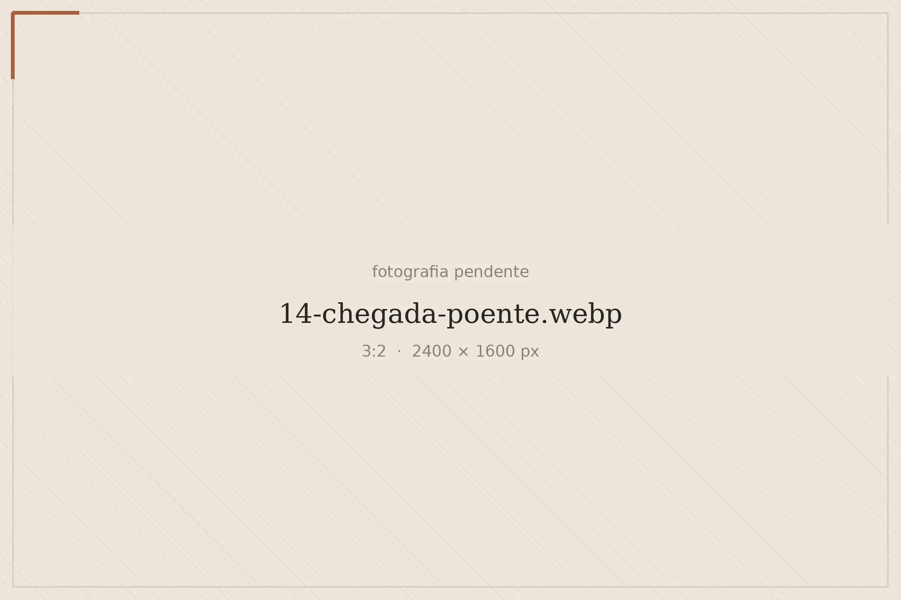

Recanto do Poente · Pirenópolis, Goiás
O fim de tarde merece ser vivido a dois.
Uma pausa para olhar o horizonte, alongar a conversa e deixar o dia acontecer com calma.


Dias com mais espaço para vocês
O seu tempo, no seu ritmo.
Entre um mergulho e uma conversa no deck, a melhor programação pode ser simplesmente ficar. Escolham o canto preferido e aproveitem o tempo juntos.
Até 2 hóspedes · Cama king · Cozinha · Wi-Fi
Um convite para ficar mais um pouco.
Piscina e hidromassagem aquecidas, de uso privativo. Para alternar água, descanso e vista sem pressa de sair.


Da luz do dia ao descanso
Conforto em cada pausa.
A madeira, os tecidos claros e a luz que atravessa o vidro criam o clima para desacelerar. De manhã ou depois de um dia inteiro sem olhar o relógio.



Há dias que pedem só mais um instante.
Escolham uma cadeira. Deixem a conversa continuar. O resto pode esperar.

Conheça cada detalhe.
Explore os ambientes e imagine os seus dias por aqui.
A experiência de quem já esteve aqui.
5,0 de 5 no Airbnb · 55 avaliações
Consulta realizada em 08/10/2026.

Planeje sua chegada.
O caminho inclui 4 km de estrada de chão. Após a confirmação da reserva, vocês recebem a localização exata e as orientações de chegada. Sigam a rota indicada pelo anfitrião no Waze.
Perguntas frequentes
Como consulto minhas datas?
Selecione a entrada, a saída e o número de hóspedes. O botão abre uma mensagem no WhatsApp para vocês consultarem a estadia diretamente com o atendimento.
A consulta já confirma a reserva?
Não. A confirmação depende da disponibilidade, dos valores e das condições informadas pelo atendimento.
Como recebo as orientações de chegada?
As instruções e a localização exata são enviadas após a confirmação da reserva.
Onde consulto valores e condições da estadia?
Pelo WhatsApp. Informe as datas desejadas para receber as condições correspondentes ao seu período.
Qual vai ser o próximo fim de tarde de vocês?
Escolham as datas e deem o primeiro passo para a próxima pausa.
Disponibilidade, valores e condições serão confirmados pelo atendimento.